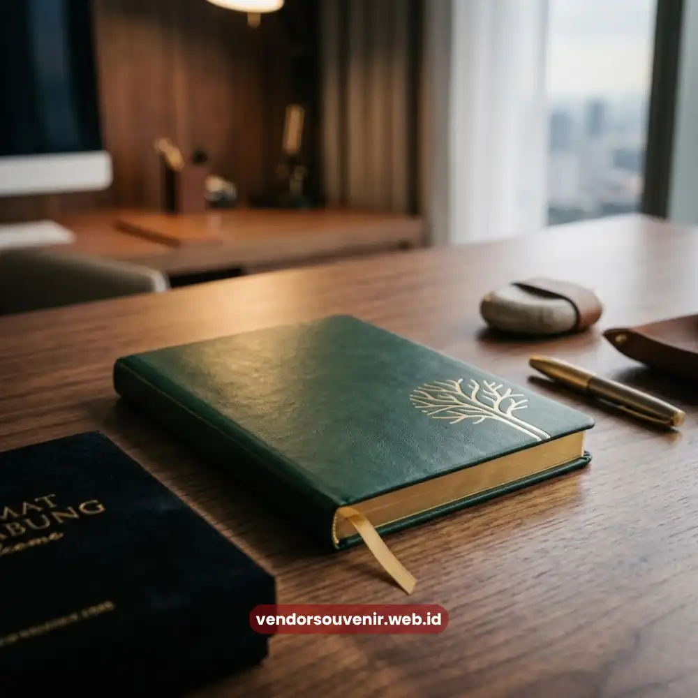

Daftar Isi
Souvenir custom logo untuk hadiah karyawan baru adalah merchandise yang dicetak dengan identitas visual perusahaan, seperti logo, warna korporat, dan tagline, guna memperkuat pengenalan brand sejak hari pertama karyawan bergabung. Pendekatan ini efektif karena barang tersebut digunakan secara rutin dalam aktivitas kerja sehari-hari, sehingga identitas perusahaan terus terlihat secara konsisten.
Semakin sering logo tersebut terlihat oleh karyawan maupun lingkungan sekitarnya, semakin kuat pula pengenalan brand yang tertanam dalam ingatan mereka.
- Souvenir custom logo memperkuat identitas visual perusahaan melalui penggunaan rutin oleh karyawan.
- Konsistensi warna, tipografi, dan posisi logo penting untuk menjaga citra profesional brand.
- Beberapa jenis souvenir lebih efektif sebagai media branding dibandingkan jenis lainnya.
- Custom logo pada hadiah karyawan baru turut membangun rasa memiliki terhadap perusahaan.
- Vendor Souvenir menyediakan layanan custom desain logo untuk berbagai kebutuhan merchandise perusahaan.
Mengapa Custom Logo Penting pada Souvenir Hadiah Karyawan Baru?
Logo perusahaan berfungsi sebagai representasi visual identitas brand yang membantu audiens, termasuk karyawan internal, mengenali dan mengasosiasikan suatu produk atau perusahaan secara instan.
Pada konteks hadiah karyawan baru, custom logo memberikan dimensi tambahan berupa penguatan rasa kepemilikan sekaligus promosi brand secara pasif.
Custom Logo sebagai Media Branding Berkelanjutan
Berbeda dengan materi promosi konvensional yang bersifat sementara, souvenir dengan custom logo memiliki umur pakai lebih panjang karena digunakan secara berulang dalam jangka waktu lama.
Hal ini menjadikan souvenir sebagai media branding yang efisien secara biaya dibandingkan bentuk promosi lain yang bersifat sekali pakai.
Memperkuat Konsistensi Citra Perusahaan
Penerapan logo yang konsisten pada seluruh merchandise perusahaan, termasuk hadiah karyawan baru, membantu membangun citra brand yang solid dan terpercaya.
Konsistensi ini penting karena persepsi audiens terhadap brand terbentuk dari akumulasi interaksi visual yang berulang, bukan dari satu momen tunggal saja.

Identitas Visual yang Kuat Melalui Custom Logo
Apa Saja Jenis Souvenir yang Efektif untuk Custom Logo?
Tidak semua jenis souvenir memiliki tingkat efektivitas branding yang sama, sehingga pemilihan jenis produk perlu mempertimbangkan frekuensi penggunaan dan visibilitas logo pada barang tersebut.
Perlengkapan Kerja dengan Visibilitas Tinggi
Notebook, pulpen, dan tumbler termasuk kategori souvenir dengan visibilitas tinggi karena digunakan secara langsung dalam aktivitas kerja harian.
Posisi logo pada permukaan yang mudah terlihat, seperti sampul notebook atau badan tumbler, memaksimalkan potensi pengenalan brand setiap kali barang tersebut digunakan.
Merchandise Fashion dan Aksesori
Totebag, jaket ringan, atau pin merupakan kategori souvenir yang tidak hanya digunakan di lingkungan kantor, tetapi juga berpotensi dibawa karyawan ke berbagai tempat di luar kantor.
Jangkauan visibilitas yang lebih luas ini menjadikan kategori tersebut relevan sebagai media perluasan pengenalan brand ke lingkungan yang lebih beragam.
Perangkat Elektronik Pendukung Kerja
Power bank, charger portable, atau mouse pad custom logo menjadi pilihan relevan mengingat ketergantungan tinggi karyawan terhadap perangkat elektronik dalam pekerjaan sehari-hari.
Selain fungsional, barang-barang ini juga memiliki durasi penggunaan yang cenderung panjang, sehingga logo perusahaan dapat terus terlihat dalam jangka waktu lama.
Bagaimana Custom Logo Memengaruhi Persepsi Karyawan?
Persepsi karyawan terhadap perusahaan tidak hanya dibentuk oleh kebijakan kerja, tetapi juga oleh detail kecil seperti kualitas dan estetika merchandise yang mereka terima, termasuk hadiah karyawan baru dengan custom logo.
Membangun Rasa Bangga terhadap Brand
Karyawan yang menerima souvenir dengan desain logo berkualitas cenderung merasa lebih bangga menggunakan dan menunjukkan barang tersebut kepada lingkungan sekitarnya.
Rasa bangga ini secara tidak langsung memperkuat loyalitas karyawan terhadap perusahaan tempat mereka bekerja.
Mendukung Rasa Kesetaraan Antarkaryawan
Pemberian souvenir custom logo yang konsisten kepada seluruh karyawan baru, tanpa membedakan level jabatan secara mencolok, dapat menumbuhkan rasa kesetaraan dan kebersamaan di lingkungan kerja.
Kesetaraan ini penting untuk membangun budaya kerja yang inklusif sejak awal masa kerja karyawan.
Faktor Teknis dalam Penerapan Custom Logo pada Souvenir
Penerapan custom logo pada souvenir memerlukan pertimbangan teknis agar hasil akhir tetap rapi, tahan lama, dan mencerminkan kualitas brand secara maksimal.
Pemilihan Teknik Cetak yang Sesuai
Setiap jenis material souvenir memiliki teknik cetak logo yang paling sesuai, misalnya bordir untuk produk berbahan kain atau laser engraving untuk produk berbahan logam.
Pemilihan teknik yang tepat memengaruhi daya tahan logo terhadap penggunaan dan pencucian dalam jangka panjang.
Konsistensi Warna dan Proporsi Logo
Warna logo pada souvenir fisik perlu disesuaikan agar tetap konsisten dengan panduan identitas visual perusahaan, meskipun terdapat keterbatasan warna pada beberapa teknik cetak tertentu.
Proporsi ukuran logo juga perlu diperhatikan agar tidak terlihat terlalu dominan atau justru kurang terlihat pada permukaan produk.

Vendor Souvenir Siap Membantu Kebutuhan Onboarding Anda
Souvenir custom logo untuk hadiah karyawan baru merupakan strategi branding jangka panjang yang efektif membangun konsistensi identitas visual sekaligus memperkuat rasa memiliki karyawan terhadap perusahaan.
Pemilihan jenis produk, teknik cetak, dan konsistensi desain menjadi faktor penentu keberhasilan strategi ini dalam jangka panjang.
Jika perusahaan Anda membutuhkan solusi custom desain logo pada souvenir hadiah karyawan baru, tim Vendor Souvenir siap membantu mewujudkan konsep branding yang konsisten dan berkualitas.
Hubungi Vendor Souvenir untuk mendiskusikan kebutuhan custom logo perusahaan Anda.
Pertanyaan yang Sering Diajukan (FAQ)
Apakah semua jenis souvenir bisa diberi custom logo perusahaan?
Sebagian besar jenis souvenir dapat diberi custom logo, namun teknik cetak yang digunakan perlu disesuaikan dengan jenis material produk agar hasilnya optimal dan tahan lama.
Apakah custom logo memengaruhi harga souvenir secara signifikan?
Biaya tambahan untuk custom logo dapat bervariasi tergantung teknik cetak, jumlah warna, dan volume pemesanan, sehingga sebaiknya dikonsultasikan sesuai kebutuhan spesifik perusahaan.
Bagaimana memastikan warna logo pada souvenir tetap sesuai identitas brand?
Menyediakan panduan identitas visual atau brand guideline kepada tim produksi dapat membantu menjaga konsistensi warna dan proporsi logo pada berbagai jenis souvenir perusahaan.
Maroon Souvenir
Partner Corporate Gift terpercaya di Indonesia. Berpengalaman melayani ratusan perusahaan sejak 2018.
Lihat Portofolio Kami